Transit News
Trending
- 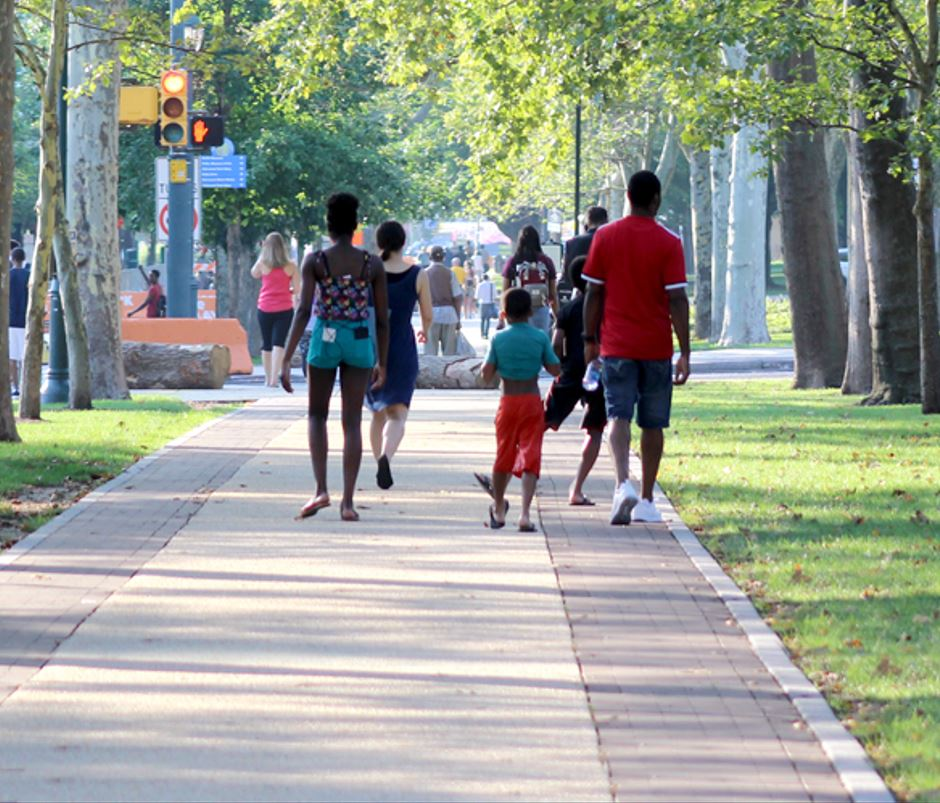
New study confirms Urban Forestry Benefits Public Health.
TheUrbanist
- 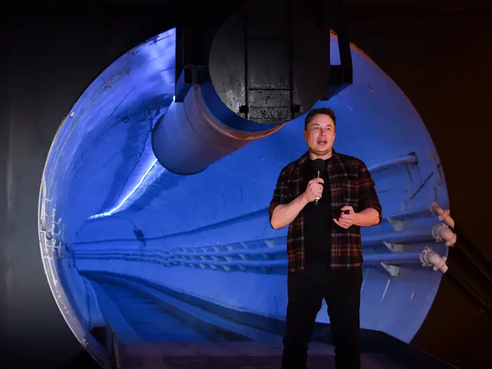
Elon Musk confirms hyperloop is better than trains. Dems disagree.
FoxNews
Biden Confirms Musk is an idiot. GOP disagrees, wants hyperloop.
MSNBC
- 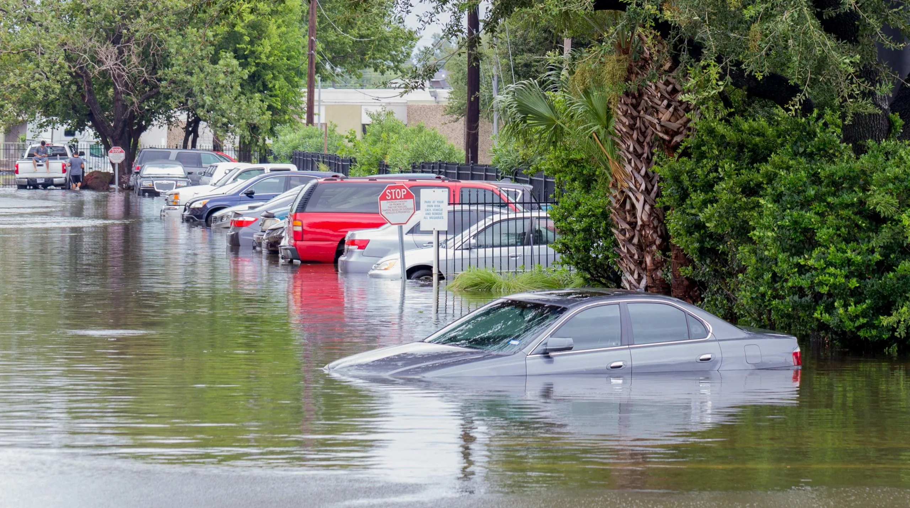
After Ian, FL is underwater. EVs won't work for foreseeable furute.
MiamiHearald
- 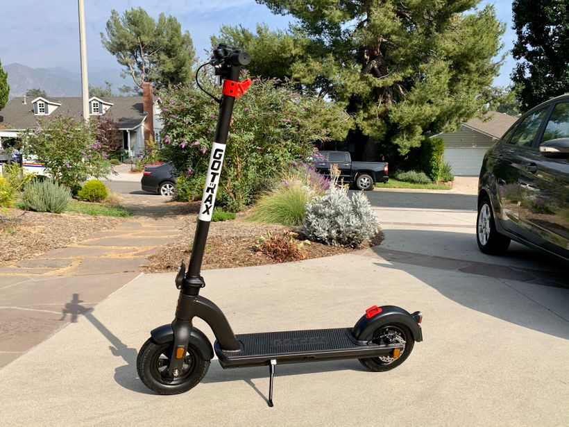
GoTrax unveils new commuter scooter. Only $350 until Thursday.
BestScooters.net
Featured
- 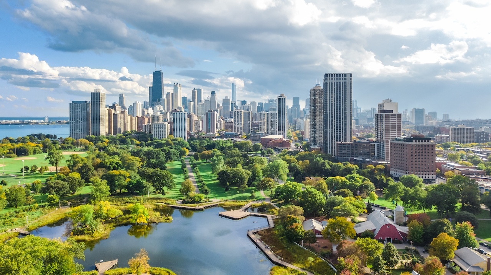
Walkability Index, Urban Forests's Affect on Social Justice in OKC.
ESRI
- 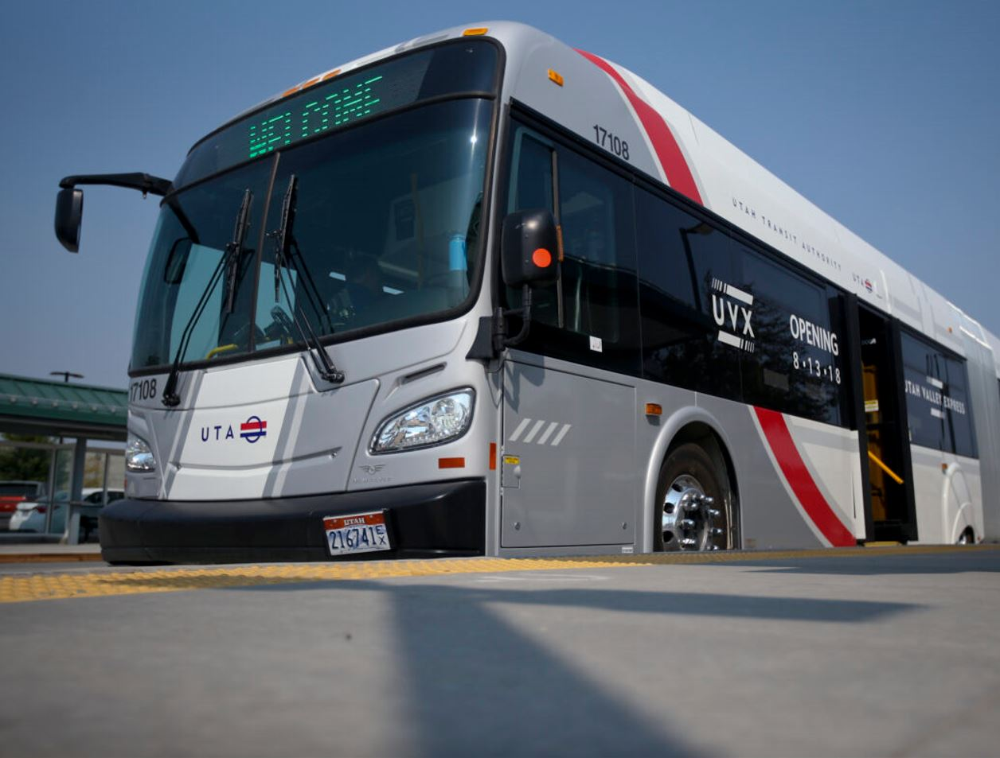
UVX offers flexibility for BYU students. NIMBYs hate the cost.
DailyHearald
- 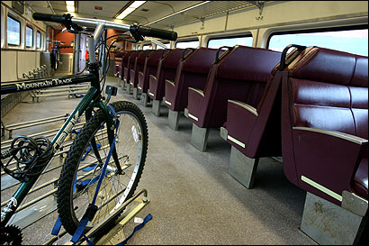
MBTA allowed bikes on train, Boston's happiness index rose.
RedSoxNation
- 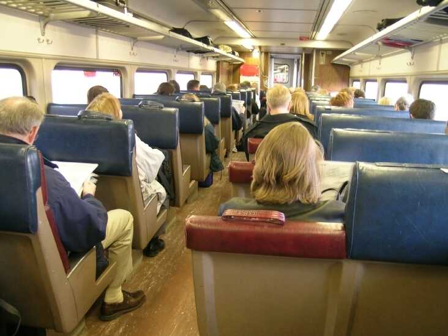
SF funds new train line. Why the uproar about it causing inequity?
BayAreaInquirer
- 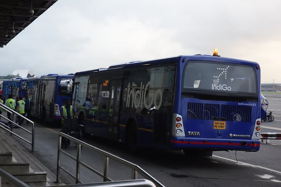
IndiGo secures funding from Biden's Infrastructure bill.
NYTimes
- 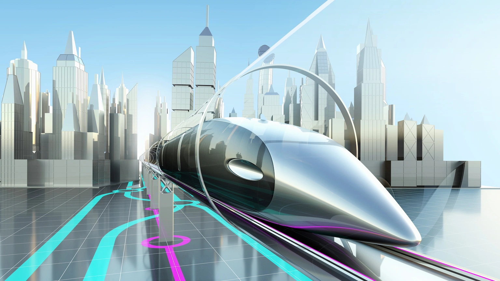
Both sides of Musk's hyperloop. Futuristic or unsustainable?
HuffPost
- 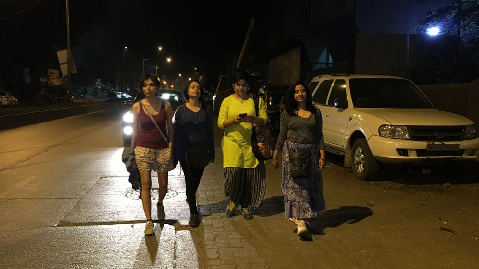
Here are 10 tips for women to stay safe while walking at night.
MocoShow
- 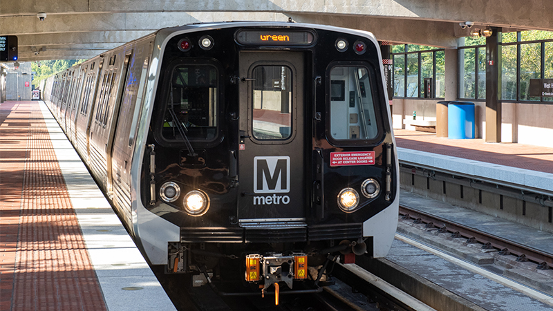
Mayor signs bill, $100 WMATA credit per month for residents.
WashingtonPost
- 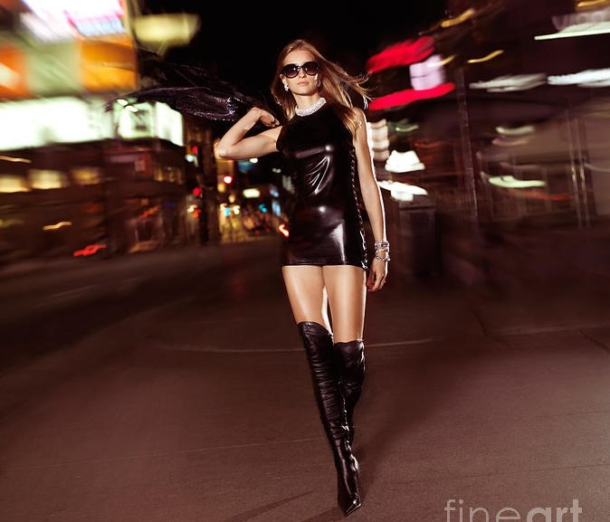
Ok fine, walking and biking downtown are better than driving.
FoxNews
Besk kicks for strolling through Central Park this winter.
NYPost
Blogs
Blogs are written internally by folks at UniverCity. We make our best effort to provide educational and thought provoking posts about various elements within cities' transportation networks. These are not comprehensive, but focus on current events.
The LGBTQ+ community is invested in public transportation in every us urban center, even though they have historically been neglected in transit planning.
Yes, safety is a personal responsibility, but it is also a team effort. Policy makers, urban and regional planners, businesses, transit agencies, school districts, home owners, landlords, district attourneys and police must all play their role in creating safe communities.
Elon Musk is a brilliant, successful Entrepreneur - that much is certain. Tesla, SpaceX and the Boring Company. These missions are well-intended, but are they sustainable mobility solutions? We asked Jeremy Horne of TransWay and Musk himself about the implications of such missions on mobility and the planet.